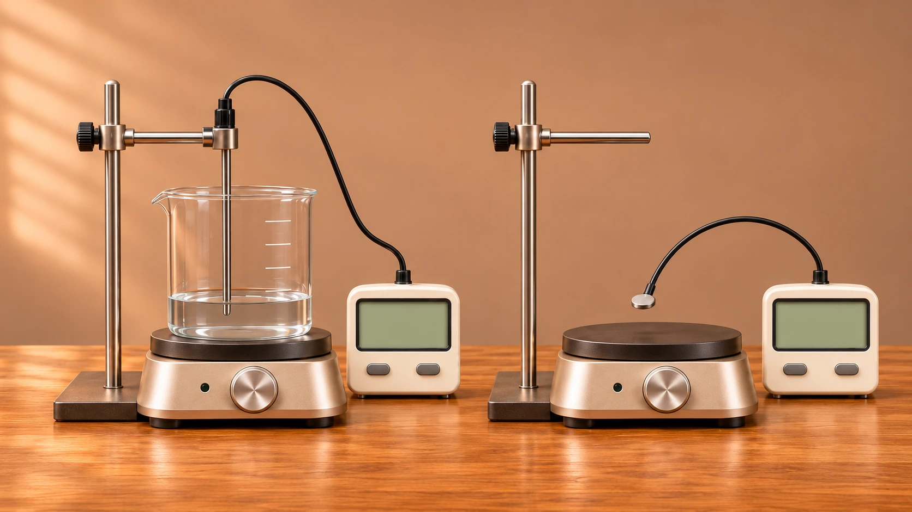
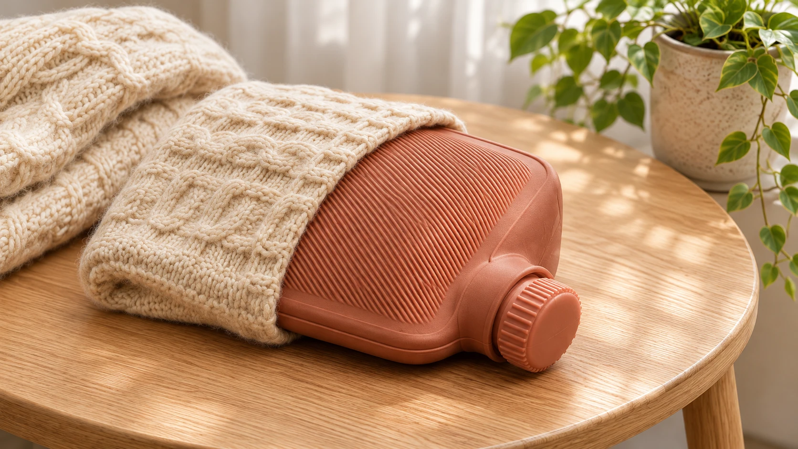
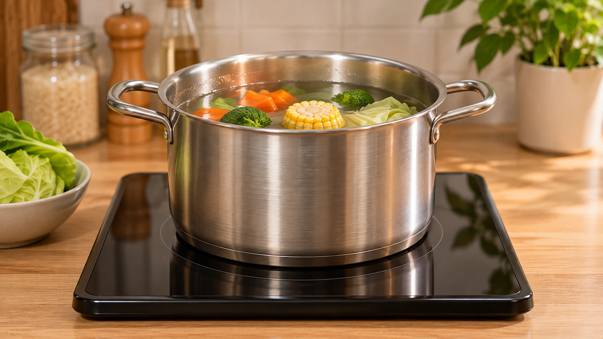

從吸收熱量，追蹤溫度的改變
五個學習區塊・一個單元小測讓 1 g 水升高 1°C，需要多少熱？
熱量單位：從 100 g 水的升溫認識「卡」
溫度我會量了，水吸收的熱量要用什麼單位？
1 g 水太少，不容易操作。我們先量取 100 g 水，觀察它從 20°C 升到 21°C。
觀察同一份水
100 g 水・初溫 20°C 已量取 100 g 水
已量取 100 g 水
升高了幾度？
目前水溫 − 起始水溫 ＝ 溫升
正在準備器材畫面…
熱量可以用「卡」記錄，符號是 cal。讓 1 g 水升高 1°C 所需的熱量，約是 1 cal。
共同條件：水都升高 1°C
| 水量 | 約需吸收的熱量 |
|---|---|
| 1 g 水 | 1 cal |
| 100 g 水 | cal |
熱量依模型估算；溫度計提供水溫讀值。
器材與模型條件
先將空燒杯在電子秤上歸零，再量取 100 g 水。溫度探針浸入水中，不碰杯底或杯壁，並以攪拌使水溫較均勻。畫面呈現的是生成的虛擬器材，並非實驗錄影。
模型分開計算水吸熱、玻璃容器吸熱與向 20°C 環境散熱；假設水與容器充分達到同溫。採水的近似比熱、容器熱容量 42 J/°C、有效供熱 20 W、散熱係數 0.5 W/°C；有效供熱不等於加熱板的額定功率。
動畫加速 4 倍，到 21°C 停熱；完成後保留當次讀值，不繼續模擬冷卻，也不呈現探針反應延遲與停熱後餘熱。100 g 水吸收約 100 cal 是模型換算，沒有將溫度計當作熱量計。
生活中的「大卡」和焦耳呢？
1 kcal（大卡）＝1,000 cal（卡）。J（焦耳）也是能量單位，1 cal 約為 4.2 J。
改變單位，並不會改變實際傳遞的能量，就像同一段長度能用公分或公尺表示。
同一杯水，吸收不同熱量會怎麼變？
熱量與溫升：固定質量，比較吸收熱量
水量一樣，吸收的熱量加倍，升高的溫度會怎麼變？
邊加熱，邊看熱量與溫升的變化
可自行輸入100～3,000 cal（含小數）；更換目標後，從20°C重新比較。
請輸入100～3,000 cal的有效數字。
吸收熱量與溫升
關係直線橘點連續移動並留下觀察點；數字稍作停留，方便讀取。
正在準備器材畫面…
查看推算示例的逐點數據
| 水吸收熱量 | 水溫 | 溫升 |
|---|
熱量為模型估算；容器吸熱與散熱另計。器材為 AI 情境示意，動畫已加速。
從數字找規律
同一份 100 g 水
推算示例・非本次觀察| 水吸收的熱量 | 100 cal | 200 cal | 300 cal |
|---|---|---|---|
| 升高的度數 | 1°C | 2°C | 3°C |
吸熱量變幾倍，升高的度數也變幾倍。
這種關係叫做「成正比」。
模型條件
另取100 g、20°C的水，沿用第一區器材，假設充分攪拌且水與玻璃容器同溫。水吸熱、容器吸熱與向20°C環境散熱分開計算；20 W有效供熱、42 J/°C容器熱容量與0.5 W/°C散熱係數均為教學設定，非實測校正。
目標是水實際吸收的累計熱量，不是加熱器總供能；溫度計只提供水溫，熱量由模型估算。範圍100～3,000 cal配合本模型可達的加熱區間，水最高約50°C，無狀態改變。橫軸是水累計吸熱量，縱軸是從20°C起算的溫升，並非水溫或時間。
一次連續加熱到目標才停止，沿途自動留點，最後的小數終點亦會保留；預設1,000 cal時每100 cal留點，其餘目標自動調整取樣間距。全程同一加熱設定、30倍動畫加速，不模擬探針遲滯、停熱餘熱與等待冷卻。換區或背景中斷保留讀值，不自動續熱；手動繼續。更換目標或重新觀察會清除本次紀錄並從20°C開始。推算示例明確標示，不當作本次觀察。
水量不同，升高的度數會怎麼變？
輸入水量，驗證曲線上的預測位置
都是水・初溫20°C・水吸收1,000 cal
可自行輸入100～350 g
請輸入100～350 g的有效水量。

固定吸熱量下的水量與升溫
曲線：推算關係
空心點：預測位置實心點：驗證結果
正在準備器材…
吸收同樣熱量時，水量越多，升高的度數越少。
曲線與加熱讀值為教學模型推算；器材為AI示意，動畫已加速。
器材與模型條件
水量可輸入100～350 g及小數，範圍配合約400mL燒杯與探針浸水位置。更換水量代表重新量取另一份20°C的水，水位只在準備時調整，加熱中水量固定。
沿用原水、容器及散熱模型：20 W有效供熱、42 J/°C容器熱容量、向20°C環境散熱係數0.5 W/°C。水實際吸收1,000 cal才停熱，容器吸熱與散熱另計。30倍動畫加速，數字約每0.4秒更新；完成時立即顯示最後讀值。
曲線表示不同水量都吸收1,000 cal後的推算結果。空心點先標示預測終點，加熱完成才顯示實心結果點；兩者在本教學模型內重合，並非真實量測誤差的模擬。換區或背景中斷保留進度，不自動續熱；按繼續驗證接續，更改水量則從20°C重新開始。
換一種物質，剛才的公式還適用嗎？
物質種類與溫升：檢驗水的近似關係
用水的算法，500÷100＝5°C。換一種物質，也會升高5°C嗎？
待檢驗的預測：用水的算法，兩份都會升高5°C？

水100 g鋁100 g（固體） 已吸收 cal已吸收 cal觀察到的溫升
共同刻度
完成檢驗後，引入比熱
比熱：讓1 g物質升高1°C所需的熱量。
同樣質量與吸熱量，比熱越大，溫升越小。水的比熱約為1，所以剛才水的算法省略了這一項。
溫升＝吸收熱量÷（質量×比熱）
Q ＝ m × c × ΔT
Q：吸收熱量（cal） m：質量（g） c：比熱〔cal／(g·°C)〕 ΔT：溫升＝末溫－初溫（°C）
樣品視為均勻溫度，無狀態改變。吸熱與動畫為模型示意，不代表實測。
比較條件與模型
只換物質，固定100g、初溫20°C與樣品各吸收500cal。固體直接以接觸探針讀取均勻樣品的模型溫度；不把固體當作液體，也不固定體積相同。金屬塊尺寸為示意，比熱使用常溫近似值。
此區以樣品實際吸熱作比較，忽略容器、散熱與內部導熱過程。動畫進度為示意，不代表相同加熱功率或相同效率，不用來比較熱傳導快慢。到點保留觀察時刻，不模擬冷卻或探針反應延遲。換物質或重做會收起當次歸納，換區與背景中斷不自動續熱。
比熱能解釋哪些生活現象？
生活應用：放熱、海陸溫差與鍋具
同樣降溫，為什麼水適合拿來保暖？
水500 g · 從50°C降到40°C

水500 g向外放熱正在準備水袋場景…
降溫時，放出多少熱量？
降溫幅度 °C
用剛才的公式解釋
放出熱量的大小＝質量×比熱×降溫幅度
500 × 1 × (50 − 40)
＝5,000 cal
降溫幅度＝初溫－末溫；水的比熱約1 cal／(g·°C)。
相同質量、相同降溫幅度
各500 g · 都降低10°C
鋁的比熱約0.22 cal／(g·°C)；這是相同條件的模型比較。
相同質量、降低相同溫度，比熱較大的物質能放出較多熱量。
場景為AI生成，讀值為模型示意；動畫不代表實際冷卻時間；保暖多久也受外袋、環境與散熱條件影響。
同一片海岸，切換白天與夜晚
正在準備海岸場景…
用公平比較模型理解
相同質量、吸收相同熱量
水的比熱較大，吸收相同熱量時，溫升較小。
圖中高低僅示意變化大小，不代表實測溫度或固定倍數。
白天與夜晚各以相同初溫作公平比較；AI場景只示意海陸情境。真實海陸溫差還受日照、混合、蒸發與風等因素影響。
點選鍋身或鍋底，分別觀察

正在準備廚房場景…
比熱
同樣質量、升高同樣溫度，需要多少熱量？
導熱
熱如何通過金屬鍋身？
點選鍋身或鍋底，分別觀察兩個重點。
還要看導熱、厚度、熱源與食物。鍋身升溫和食物熟得快，是不同問題。
連回5.2：比熱與導熱是不同性質。場景為AI生成，箭頭為示意，不用來預測實際烹調時間。
接著，換你用觀察數據找出未知樣品的比熱。
單元小測
找出未知樣品的比熱
先觀察讀值，再用熱量、質量與溫升推算。
吸收同樣的熱量，兩份樣品的升溫會一樣嗎？未知樣品的比熱是多少？
左右移動，查看完整的兩份樣品。
重觀察會保留作答；「換一組」會更換數據及甲乙配置，並清除本題作答。
器材與模型條件
每組兩份樣品都是100g、初溫20°C，實際吸收相同熱量；水與固體分別使用浸入式及表面接觸探針。未知固體的比熱為教學設定，不對應特定真實材料。假設均勻溫度、比熱固定、沒有狀態改變，只比較樣品吸熱，忽略容器、散熱與內部導熱。動畫進度不表示真實加熱時間、功率或效率。器材場景為AI生成，讀值由模型呈現。
本頁以無相變、比熱近似固定的情形比較；加熱時間與器材尺寸為教學示意，比熱值取常溫附近近似值。
回到溫度與熱單元總覽